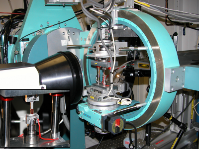

| Index -> PhD project | ||||
| |
In-situ studies of bulk deformation structures:
|
|  |
Ph.D. obtained in Phsics from Materials Research Department, Risø National Laboratory 2007.
Ph.D. thesis (pdf), arXiv:0708.3986 [cond-mat.mtrl-sci]
Selected publications: |
The work was supervised by Henning Friis Poulsen (Risø), Wolfgang Pantleon (Risø), and Tage Emil Christensen (RUC) and carried out at
Center for Fundamental Research:
Metal Structures in Four Dimensions, Materials Research Department (AFM), Risø National Laboratory.
My Ph.D. project was an experimental project which dealt with studying the formation and dynamics of dislocation structures in simple metals. A novel X-ray based technique called "High Angular Resolution 3DXRD" was developed at the 1ID-XOR beam line at the Advanced Photon Source (APS).